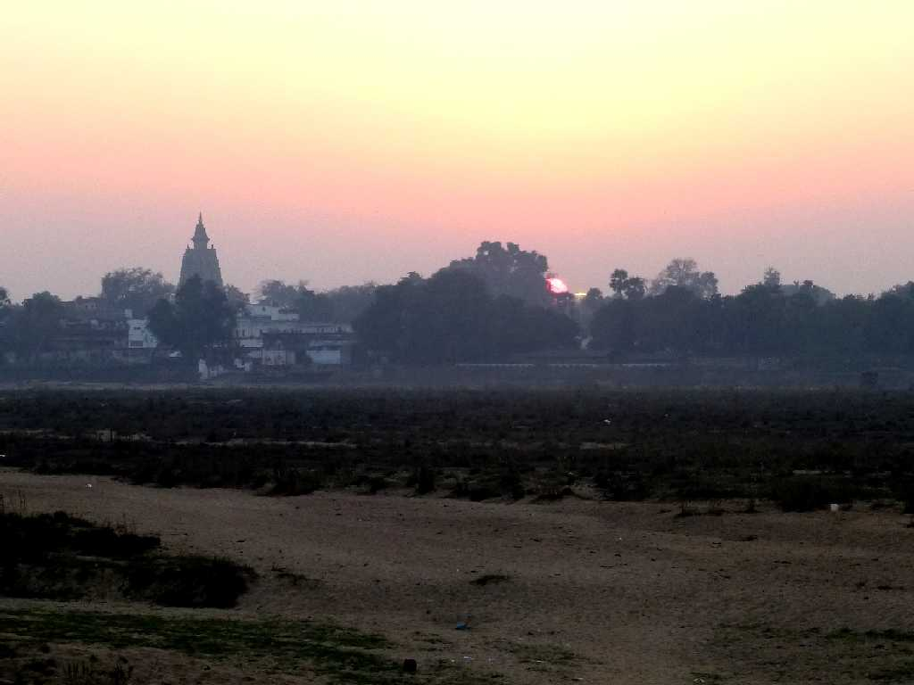
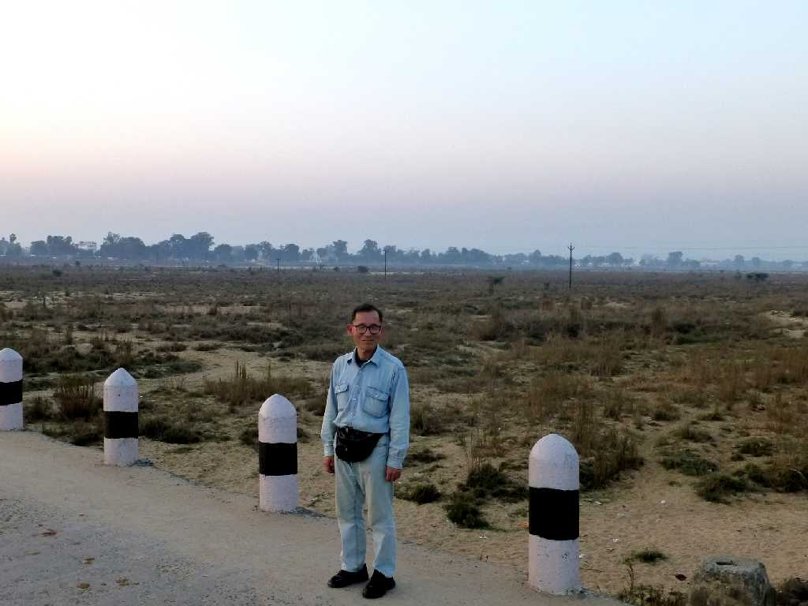
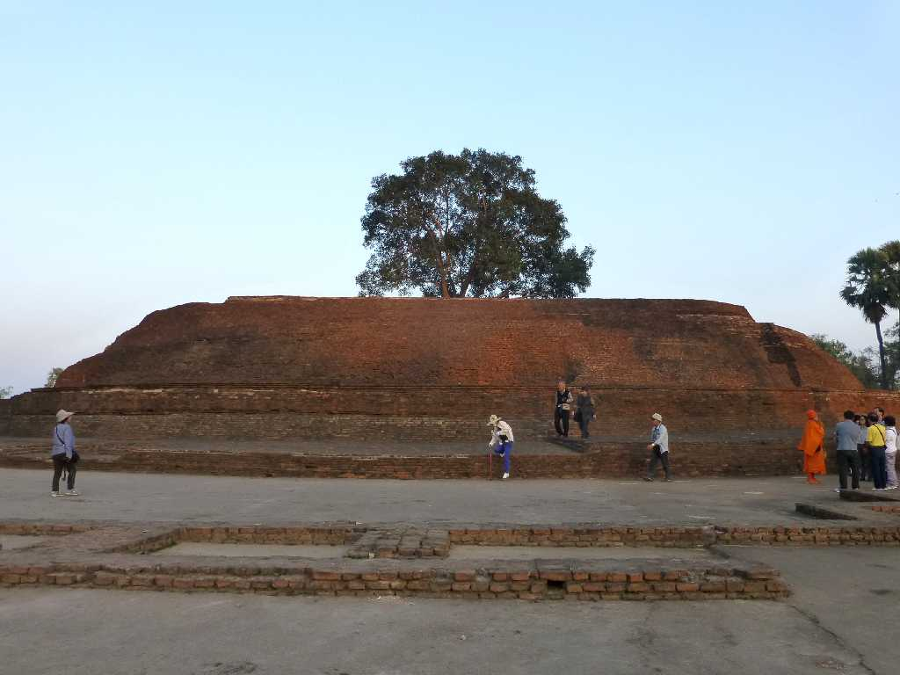

February 2 2015 17:27 Sunset Niranjana River Bodh Gaya
仏陀伽邪の大菩提寺に落ちる尼蓮禅河の日没

February 2 2015 Niranjana River
釈迦が沐浴をしていたと伝えられる尼蓮禅河

Sujata Stupa Bodh Gaya
苦行で衰弱した釈迦に村の長者の娘スジャータが乳粥を供養したと伝えられスジャータ村と名付けられた仏塔跡で８世紀頃創られた